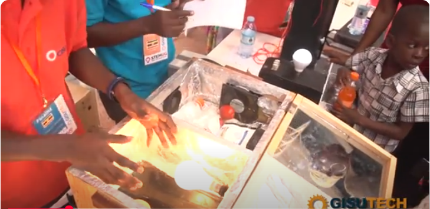
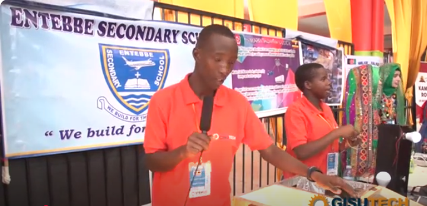

ENTEBBE SECONDARY SCHOOL
| HOME | ACADEMICS | PROJECTS | SPORTS | ONLINE FORM |
WELCOME TO ENTEBBE SECONDARY SCHOOL WEBSITE

I take this opportunity to tell you that on this school, the academic performance has been improoving for the last 4 years
and this has been during madaam Mande's regime, the wonderful headteacher of Entebbe Secondary School since 2021 to 2025. The Director of studies in the
school, madam Zahura Immaculate and her team ,the DEANS most especially the DEAN of projects, madam Nakigomba Annet, the DEAN senior four mr
Katusabe Sammuel Barongo. Below are some of the academic archievements the school has had.
